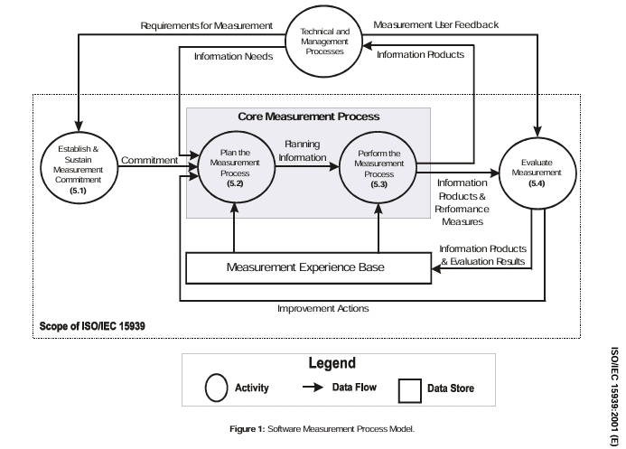
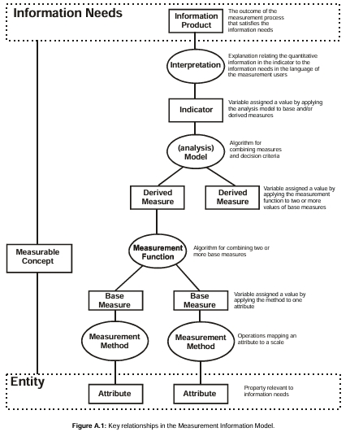

Gestão do Projeto com PSM/CID
Introdução
A gestão de processo é fundamental para garantir a qualidade e o sucesso dos projetos de software. Baseando-se na ISO/IEC 15939 e no princípio do PSM/CID, este documento apresenta a estruturação da gerência de processo, vinculados às práticas e diretrizes para o gerenciamento eficaz da medição de processos, promovendo a melhoria contínua e o alinhamento com os objetivos organizacionais (ou equipe). A motivação para adotar esse padrão internacional reside na necessidade de estabelecer métodos claros e confiáveis para coletar, analisar e utilizar dados, possibilitando decisões informadas e o aprimoramento dos resultados ao longo do ciclo de vida do software. Além disso, essa prática contribui para a coerência e coesão no própria gestão do projeto, além de mensurar o quão eficaz e adequada são as práticas e artefatos de um processo. Assim, essa página se concetra em estabelecer a gerência de processo vinculados ao projeto da disicplina de Qualidade de Software 1 (2025.1).
Objetivos
Objetivo Geral: Documentação e rastreabilidade da Gestão de processo e artefatos associados, visando a aplicação do Processo de medição de software proposto pela ISO/IEC 15939:2001.
Objetivos Específicos:
- Execução das etapas do Processo de medição que a gestão do processo.
- Implementação de três produtos de informação com integração ao Git/Github para monitoramento de processo.
- Avaliação dos resultados obtidos.
Referencial teórico
O processo de medição, conforme definido na norma ISO/IEC 15939:2001, representa uma metodologia estruturada voltada ao apoio e melhoria contínua da gestão de processos organizacionais (1, p.7-8). Sua aplicação está centrada na coleta, análise e comunicação de dados que representam tanto os produtos desenvolvidos quanto os processos implementados pela unidade organizacional (1, p.7). Ao fazer isso, a medição se torna uma ferramenta gerencial que proporciona tomada de decisão objetiva, monitoramento de desempenho e avaliação da qualidade.
Segundo a norma, o processo de medição é constituído por quatro atividades principais que espelham o ciclo de melhoria contínua PDCA (Plan-Do-Check-Act ou, traduzido, Planejar-Fazer-Checar-Agir) e pode ser visualizado abaixo e em Figura 1 ([1], p.7, 4.2):
-
5.1 Estabelecer e sustentar o compromisso de medição
Visa garantir envolvimento da alta gestão e alocação de recursos para a execução sustentável da medição. -
5.2 Planejar o processo de medição
Engloba identificar necessidades de informação, selecionar medidas, definir procedimentos e critérios. -
5.3 Executar o processo de medição
Abrange coleta, armazenamento, análise de dados e geração dos produtos de informação. -
5.4 Avaliar a medição
Promove melhoria do processo com base em avaliações de eficácia e repositório de experiências.
Figura 1: Modelo de Processo de medição de software

Fonte: Retirado da ISO/IEC 15939:2001 (1, p. 9).
Essas atividades não são estanques, mas formam um ciclo iterativo de gestão, reforçando o vínculo entre informação gerencial necessária e os produtos de informação construídos com base em medidas adequadas.
Principais Termos e Definições
Alguns termos relevantes para o contexto segundo a ISO/IEC 15939:2001 ([1], p.1-6):
- atributo: propriedade ou característica de uma entidade que pode ser distinguida quantitativamente ou qualitativamente por um humano ou automatizações.
- entidade: objeto que deve ser caracterizado através da medição dos seus atributos.
- Medida Base: medida definida em termos de um atributo e o método para quantificá-lo (independentes funcionalmente entre si).
- Medida Derivada: medida que é definida como uma função de dois ou mais valores
- Medida: variável à qual se atribui valor após operação de medição.
- Indicador: medida que fornece uma estimativa ou avaliação de atributos específicos derivados de um modelo acerca de necessidades informacionais (Information Needs) definidas.
- Produto Informacional: conjunto de indicadores e suas interpretações que satisfazem a(s) necessidade(s) informacional(is).
- Necessidade Informacional: conhecimento necessário para gerir objetivos, riscos e problemas.
- Medição: conjunto de operações que têm por objetivo determinar o valor de uma medida
- Processo de medição: conjunto de atividades para estabelecer, planejar, executar e avaliar a medição dentro de um contexto organizacional.
- Modelo: algoritmo ou cálculo que combina uma ou mais medidas de base e/ou derivadas com critérios de decisão associados.
- Escala: conjunto ordenado de valores, contínuos ou discretos, ou um conjunto de categorias às quais o atributo é atribuído.
- Unidade de medida: determinada quantidade, definida e adoptada por convenção, com a qual se comparam outras quantidades do mesmo tipo para exprimir a sua grandeza em relação a essa quantidade.
- Valor: resultado numérico ou categórico atribuído a uma medida de base, medida derivada ou indicador.
O processo é estruturado por meio do Modelo de Informação de Medição, que conecta diretamente os atributos observáveis dos elementos organizacionais às necessidades informacionais dos interessados (gerenciamento, técnica, qualidade). Isso permite uma abordagem sistemática na seleção de métricas e indicadores relevantes, com rastreabilidade desde a origem da necessidade até sua representação quantitativa e analítica.
Além disso, o processo é compatível com a abordagem CID/PSM, que organiza os artefatos da medição em níveis operacionais e estratégicos, desde o planejamento até a melhoria, reforçando o papel central da medição como parte da engenharia organizacional e da governança de qualidade.
Metodologia
Este documento adota como fundamento metodológico o modelo de processo de medição estabelecido pela norma ISO/IEC 15939:2001, com o propósito de planejar, implementar e avaliar a medição de aspectos significativos relacionados ao desempenho da equipe durante o desenvolvimento de atividades no projeto. O principal objetivo é a produção de produtos informacionais e indicadores gerenciais que serão posteriormente disponibilizados por meio de dashboards, de forma a subsidiar a gestão estratégica dos processos organizacionais.
Estrutura do Processo de Medição
Conforme descrito na norma, o processo de medição é composto por quatro atividades principais, organizadas em ciclos iterativos, baseados na abordagem de melhoria contínua (PDCA) [1]:
-
Estabelecer e sustentar o comprometimento com a medição
Consiste na definição do escopo, formalização do comprometimento organizacional e alocação dos recursos necessários para a condução do processo de medição. -
Planejar o processo de medição
Envolve a caracterização da unidade organizacional, identificação e priorização das necessidades de informação, seleção das medidas apropriadas (medidas base, derivadas e indicadores), bem como o estabelecimento dos procedimentos para coleta, armazenamento, análise, apresentação e avaliação dos dados. -
Executar o processo de medição
Inclui a integração dos procedimentos definidos aos processos operacionais, coleta sistemática dos dados contextuais e verificados, análise quantitativa dos dados obtidos, e elaboração dos produtos informacionais. -
Avaliar a medição
Refere-se à verificação da qualidade e relevância dos produtos de informação e à atualização da base de experiência da medição (Measurement Experience Base), identificando oportunidades de melhoria para ciclos subsequentes.
Aliado a isso, apresenta-se o Modelo Informacional de Medição, o qual mostra o conceito mensurável que parte desde a relação das necessidades informacionais até as entidades visto na Figura 2 abaixo.
Figura 2: Modelo Informacional de Medição (Measurement Informational Modelo)

Fonte: Retirado da ISO/IEC 15939:2001 [1, p. 20, Anexo A.1].
O modelo informacional de medição da ISO/IEC 15939:2001 estrutura-se como um sistema conceitual que conecta entidades observáveis — como processos, produtos ou projetos — a necessidades de informação gerencial por meio de atributos mensuráveis [1, p.21]. A partir desses atributos, definem-se medidas base (quantificações diretas), que podem ser combinadas em medidas derivadas por meio de funções de medição, e por fim modeladas em indicadores, os quais agregam valor analítico ao atender demandas específicas de decisão [1, p.21-22]. A complexidade e o grau de abstração da informação aumentam à medida que se avança das medidas base para os indicadores, aproximando-se das necessidades informacionais [1, p.23].
Esses indicadores são produzidos por modelos que agregam medidas e aplicam critérios de decisão — como limites, metas ou padrões — e são expressos em escalas que variam de nominal a razão, conforme a natureza dos atributos [1, p.21-22]. A aplicação prática do modelo exige que as medidas sejam concebidas com clareza metodológica, associadas a unidades convencionais de comparação e interpretadas à luz dos conceitos mensuráveis que expressam dimensões como desempenho, qualidade, risco ou produtividade. Assim, o modelo sustenta um processo iterativo de geração de conhecimento quantificável, confiável e acionável dentro da engenharia e gestão organizacional.
Aplicação no Projeto
A metodologia será aplicada durante a execução das atividades da equipe, com foco em atributos como produtividade, qualidade técnica, eficiência de comunicação e entrega de valor. As necessidades de informação serão definidas em conjunto com os interessados e convertidas em medidas observáveis, conforme os modelos previstos na norma [1].
Os dados serão extraídos dos fluxos operacionais do projeto (tais como sistemas de versionamento, gerenciamento de tarefas e produção de artefatos), e transformados em indicadores analíticos, como, por exemplo, tempo de ciclo, volume de entregas, taxa de retrabalho e grau de colaboração.
Esses indicadores serão apresentados em gráficos, podendo estar em painéis de visualização de dados (dashboards) ou outros mecanismos de integração com a plataforma Git/Github, permitindo acompanhamento contínuo da evolução do processo, análise de desempenho da equipe e suporte à tomada de decisão baseada em evidências quantitativas.
Artefatos e Etapas do Processo
Tabela 1: Artefatos do Processo de Medição
| ID | Artefato |
|---|---|
| 1 | Etapa 1: Estabelecimento e Comprometimento |
| 2 | Etapa 2: Planejamento do Processo de medição |
| 3 | Etapa 3: Implementação do Processo de medição |
| 4 | Etapa 4: Avaliação do Processo de medição |
Fonte: autores.
Considerações e Conclusão
Referencia Bibliográfica
Bibliografia
Tabela de Versionamento
| Data | Versão | Descrição | Autor | Revisor |
|---|---|---|---|---|
| 11/07/2025 | 1.0 | Criação da Página principal de Gestão de Processo com as seções definidas e feito a Introdução e Objetivo. | Mateus | Raissa |
| 11/07/2025 | 1.1 | Adição do Referencial teórico. | Mateus | Raissa |
| 12/07/2025 | 1.2 | Adição da metodologia e tabela de artefatos com hiperlinks. | Mateus | Raissa |